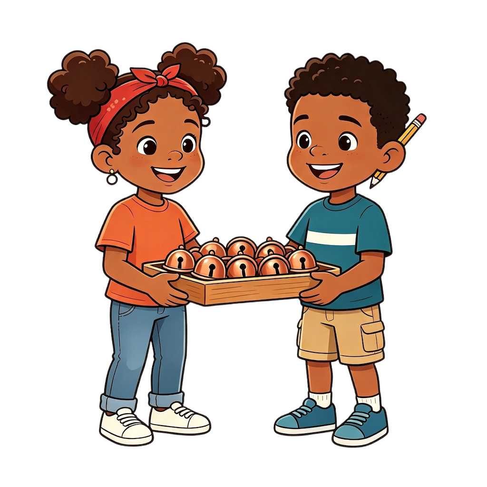

Números y Aritmética · Conteo por Agrupaciones
"El taller de doña Mercedes debe contar cientos de cascabeles antes del desfile."
"Agrupa, salta y suma: el desfile cuenta contigo."

Un pedido enorme llega al taller y contar de uno en uno no alcanza.
Doña Mercedes enseña a agrupar, saltar y sumar los sueltos.
Diez desafíos para probar el método y entregar a tiempo.